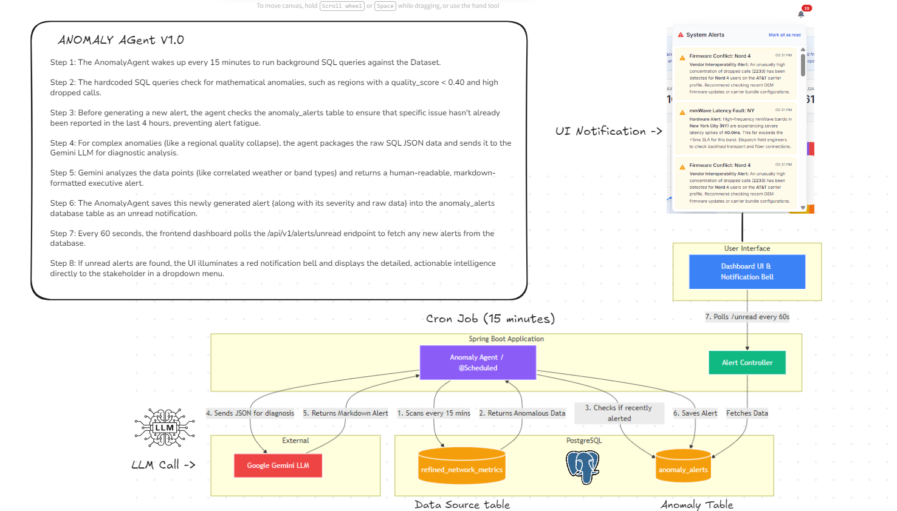

1."Anomaly Agent" (What is it?)
Traditionally, dashboards are Reactive—they sit idly waiting for a human to log in, look at a chart, or ask a question. If a critical network failure happens at 2:00 AM, nobody knows until a user explicitly checks.
The Anomaly Agent transforms our system into a Proactive Network Operations Center (NOC). It is an automated, 24/7 background watchdog. It constantly scans the telecom database for mathematical outliers, diagnoses the root cause (using pure logic or AI), and pushes urgent, human-readable alerts directly to the stakeholder's dashboard.
2. High-Level Architecture & Process Flow
The Anomaly Agent operates completely decoupled from the user's browser. It sits in the backend, bridging our "Fast Data" (SQL) and "Smart Data" (LLM) layers. Below is the end-to-end architectural flow.

Figure 1: End-to-End Proactive NOC Architecture
The 8-Step Lifecycle
- The Trigger: The
AnomalyAgentwakes up every 15 minutes to run background SQL watchdog queries against the telecom database. - The Scan: Hardcoded SQL queries check for mathematical anomalies (e.g., regions with a
quality_score < 0.40and high dropped calls). - Alert Suppression: Before generating a new alert, the agent checks the
anomaly_alertstable to ensure that specific issue hasn't already been reported in the last 4 hours, preventing alert fatigue. - AI Packaging: For complex anomalies, the agent packages the raw SQL JSON data and sends it to the Gemini LLM for diagnostic analysis.
- Diagnosis: Gemini analyzes the data points (like correlated weather or band types) and returns a human-readable, markdown-formatted executive alert.
- Persistence: The agent saves this newly generated alert (along with its severity and raw data) into the database as an unread notification.
- UI Polling: Every 60 seconds, the frontend dashboard polls the
/api/v1/alerts/unreadendpoint to fetch any new alerts. - Executive Delivery: The UI illuminates a red notification bell and displays the detailed, actionable intelligence directly to the stakeholder.
3. Deep Dive: SQL Watchdogs & Real-World Scenarios
The agent utilizes a Hybrid Cost-Saving Model. We do not feed the whole database to the AI. Instead, we use highly specific SQL queries to find the "needle in the haystack." Some anomalies require AI to summarize, while others are pure hardware faults that are hardcoded to save API costs.
Watchdog 1: Complex Quality Degradation (LLM-Powered)
What it gathers: Searches for localized network collapses by filtering for sectors where the quality score has plummeted while experiencing a surge in dropped calls. It groups data by location, network band, and weather to provide context to the AI.
SELECT state, city, network_band, weather_condition,
ROUND(AVG(quality_score), 2) as avg_quality,
SUM(dropped_calls) as recent_dropped_calls
FROM refined_network_metrics
WHERE quality_score < 0.40 AND dropped_calls > 5
GROUP BY state, city, network_band, weather_condition
ORDER BY recent_dropped_calls DESC
LIMIT 3;Real-World Scenario
The Incident: A severe thunderstorm rolls through Los Angeles. "Rain fade" severely degrades the n78 5G spectrum.
The Value: Gemini reads the JSON, connects the dots between "n78 band", "Los Angeles", and "Heavy Rain", and writes a contextual alert: "Investigate an urgent degradation of the n78 mid-band spectrum across Los Angeles. Preliminary diagnostics indicate weather-induced signal degradation..."
Watchdog 2: mmWave Latency Fault (Pure-SQL)
What it gathers: Monitors physical hardware SLAs. It explicitly filters for ultra-fast mmWave bands (n258, n260). If average latency spikes above acceptable thresholds (e.g., > 100ms), it instantly flags a physical infrastructure failure.
SELECT state, city, network_band, MAX(avg_latency_ms) as peak_latency
FROM refined_network_metrics
WHERE network_band IN ('n258', 'n260') AND avg_latency_ms > 100
GROUP BY state, city, network_band
ORDER BY peak_latency DESC
LIMIT 1;Real-World Scenario
The Incident: A mmWave small-cell antenna's backhaul fiber cable feeding the tower is damaged by construction.
The Value: No AI is needed. High latency on mmWave is always a physical issue. The Java code instantly formats this: "Hardware Alert: High-frequency mmWave bands in Chicago are experiencing severe latency spikes of 145ms. Dispatch field engineers to check backhaul transport."
Watchdog 3: Device & Firmware Conflict (Pure-SQL)
What it gathers: Ignores geography and weather, instead aggregating all dropped calls globally and grouping them solely by device_model and carrier. It triggers only if a single phone-and-carrier combination hits a massive volume of failures.
SELECT device_model, carrier, SUM(dropped_calls) as total_drops
FROM refined_network_metrics
GROUP BY device_model, carrier
HAVING SUM(dropped_calls) > 5000
ORDER BY total_drops DESC
LIMIT 1;Real-World Scenario
The Incident: An OEM pushes a flawed over-the-air (OTA) modem firmware update. Suddenly, specific users on a specific carrier start dropping calls nationwide, while others remain fine.
The Value: Finding this manually on a map is nearly impossible because drops are scattered geographically. This query isolates the software conflict: "Vendor Interoperability Alert: An unusually high concentration of dropped calls has been detected for Galaxy S24 users on the AT&T profile. Check recent OEM firmware updates."
4. Configuration & Threshold Tuning
To keep our architecture robust and prevent hardcoding, the Anomaly Agent is fully parameterized. The triggers dictating what constitutes an "anomaly" are defined in our application.properties file. This allows NOC managers to tune the sensitivity of the alerts without requiring engineering teams to recompile the Java application.
Below is a breakdown of the agent's core properties, how their baselines were aligned with industry SLAs, and how we temporarily override them to simulate faults during testing.
| Property Name | Production Baseline | Test Value | Business & Data Rationale |
|---|---|---|---|
anomaly.agent.polling-rate |
900000 (15 mins) | 10000 (10 secs) | Determines how often the agent wakes up to query the DB. 15 minutes is standard to prevent database strain while remaining proactive. Lowered to 10 seconds purely to witness real-time UI updates during testing. |
anomaly.agent.suppression-hours |
4 | 4 | The core mechanism for preventing alert fatigue. If a tower goes down, it may take hours to repair. This ensures executives receive exactly one actionable notification per incident per 4-hour window, rather than continuous spam. |
anomaly.agent.threshold.quality-score |
0.40 | 0.40 | Defines a "Critical Degradation." In our metric index (0.0 to 1.0), anything below 0.40 indicates massive packet loss and unusable network speeds requiring immediate LLM diagnosis. |
anomaly.agent.threshold.mmwave-latency |
100 (ms) | 5 (ms) | mmWave (5G High-Band) SLA guarantees latency under 20ms. A 100ms threshold guarantees a catastrophic physical fault (e.g., fiber cut or misalignment). Testing Note: Because our simulated network dataset is exceptionally healthy (max latency ~10ms), we lowered this to 5ms to artificially force the watchdog to trip and test the UI. |
anomaly.agent.threshold.device-fault-drops |
5000 | 100 | Triggers the Firmware Conflict alert. A nationwide bad firmware push will rapidly generate thousands of localized dropped calls for a specific carrier/device combo. Testing Note: Lowered to 100 because our synthesized dataset evenly distributes drops across multiple devices, preventing a single device from hitting the 5000 mark naturally. |
5. Business Value Alignment
- Scale: An executive cannot manually filter a dashboard to find that a specific band in a specific city is failing. The agent hunts for them.
- Cost Optimization: By relying on mathematical SQL heuristics, we only call the expensive LLM API when we have a confirmed, complex problem that needs summarizing.
- Alert Fatigue Prevention: The built-in Debouncing logic ensures that if an outage takes 6 hours to fix, the executive gets one actionable alert, not 24 spam notifications.
- MTTR (Mean Time To Resolution): When the executive logs in, the red bell instantly provides the exact location, cause, and recommended action—saving hours of manual troubleshooting.